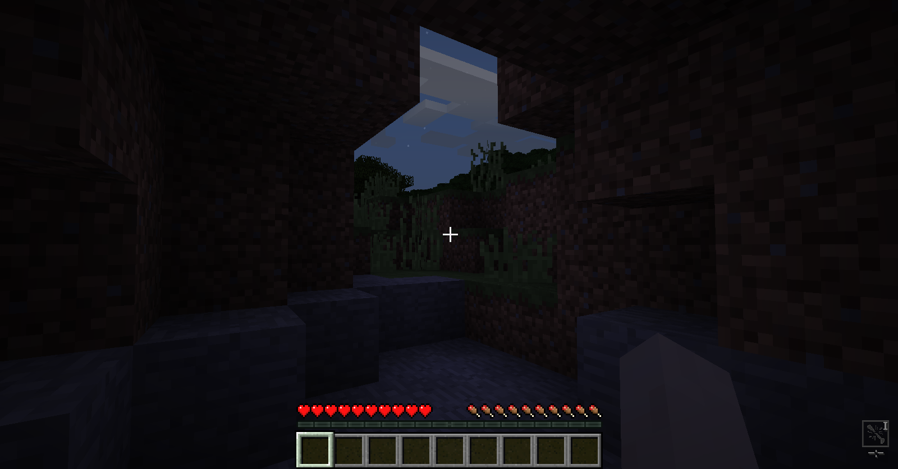

Система временных эффектовlink
Автор данной статьи — AustereTony.
Исходники можно посмотреть в GitHub репозитории.
Здравствуйте. В данном туториале я опишу процесс создания собственной системы временных эффектов (баффов), которая будет работать со всеми существами(наследниками EntityLivingBase).
Работают они так же, как и ванильные эффекты зелий, однако имеют ряд улучшений и оптимизаций. В первую очередь статья будет полезна тем, кому требуется возможность создавать множество эффектов с полным контролем над ними.
Данная статья является доработкой аналогичной статьи для версии 1.7.10 до версий 1.12+.
Для этой версии нам придётся заменить EEP на Capabilities и подправить пару функций и ещё по мелочам.
Изменения в основеlink
Основа в виде Buff и ActiveBuff осталась без изменений, смотрите для 1.7.10. Дублировать их тут не буду.
Изменения в использованииlink
Для добавления сущностям кастомных свойств теперь используются Capabilities. Для хранения и работы снашей системой нам придётся создать капу.
Первым делом создаём интерфейс и объявляем методы, которые нам потребуются. Почти все они аналогичны 1.7.10. Изменения коснулись только функций, работающих с объектом сущности. Если раньше EEP предоставляло им сущность, получаемую при регистрации, теперь нам предётся передовать её вручную.
// ru/buffs/entity/IBuffs.java
public interface IBuffs {
//Проверка наличия эффектов.
boolean haveActiveBuffs();
//Быстрая проверка на наличие указанного баффа.
boolean isBuffActive(int buffId);
//Возвращает сет ключей-идентификаторов.
Set<Integer> activeBuffsIdSet();
//Возвращает коллекцию активных баффов (ActiveBuff).
Collection<ActiveBuff> activeBuffsCollection();
//Вспомогательный метод для синхронизационного пакета.
void putActiveBuffToMap(ActiveBuff buff);
//Вспомогательный метод для пакета удаления эффекта.
void removeActiveBuffFromMap(int buffId);
//Копирование баффов из коллекции.
void copyActiveBuffs(Collection<ActiveBuff> collection);
//Получение активного баффа.
ActiveBuff getActiveBuff(int buffId);
//Добавление баффа ентити.
void addBuff(ActiveBuff buff, EntityLivingBase livingBase);
//Удаляем бафф и его эффект. Нужен так же для внешнего удаления баффа с флагом isPersistent.
void removeBuff(EntityLivingBase livingBase, int buffId);
//Метод для очищения активных баффов. Вызывается либо для полной очистки эффектов, либо при смерти.
void clearBuffs(EntityLivingBase livingBase, boolean onDeath);
//Метод обновления активных баффов. Вызывается в LivingUpdateEvent для EntityLivingBase на обеих сторонах.
void updateBuffs(EntityLivingBase livingBase);
}
Теперь объект, предоставляющий реализацию. Реализация ничуть не изменилась. Подробности смотрите для 1.7.10.
// ru/buffs/entity/Buffs.java
public class Buffs implements IBuffs {
//Карта активных баффов, которые имеет ентити. В качестве ключа используется идентификатор баффа,
//а значением является экземпляр класса ActiveBuff, описывающий идентификатор, уровень и продолжительность эффекта.
private final Map<Integer, ActiveBuff> activeBuffs = new HashMap<Integer, ActiveBuff>();
@Override
public boolean haveActiveBuffs() {
return !this.activeBuffs.isEmpty();
}
@Override
public boolean isBuffActive(int buffId) {
return this.activeBuffs.containsKey(buffId);
}
@Override
public Set<Integer> activeBuffsIdSet() {
return this.activeBuffs.keySet();
}
@Override
public Collection<ActiveBuff> activeBuffsCollection() {
return this.activeBuffs.values();
}
@Override
public void putActiveBuffToMap(ActiveBuff buff) {
this.activeBuffs.put(buff.getId(), buff);
}
@Override
public void removeActiveBuffFromMap(int buffId) {
this.activeBuffs.remove(buffId);
}
@Override
public void copyActiveBuffs(Collection<ActiveBuff> collection) {
for (ActiveBuff buff : collection) {
this.activeBuffs.put(buff.getId(), buff);
}
}
@Override
public ActiveBuff getActiveBuff(int buffId) {
return this.activeBuffs.get(buffId);
}
@Override
public void addBuff(ActiveBuff buff, EntityLivingBase livingBase) {
//Проверка наличия баффа с идентичным идентификатором.
if (this.isBuffActive(buff.getId())) {
//Если такой есть, достаем бафф из карты и сверяем уровни.
//Если уровни совпадают, комбинируем (просто присваеваем активному баффу время действия добовляемого).
//Если не совпадают, то во избежание сбоев при удалении эффекта (к примеру с атрибутами) по истечению времени
//действия удаляем активный бафф и добавляем новый другого уровня.
ActiveBuff activeBuff = this.getActiveBuff(buff.getId());
if (activeBuff.getTier() == buff.getTier()) {
activeBuff.combineBuffs(buff);
if (livingBase instanceof EntityPlayer) {
if (!livingBase.world.isRemote) {
//Уедомляем игрока если бафф был добавлен на сервере.
NetworkHandler.sendTo(new SyncBuff(activeBuff), (EntityPlayerMP) livingBase);
}
}
}
else {
this.removeBuff(livingBase, activeBuff.getId());
this.activeBuffs.put(buff.getId(), buff);
Buff.of(buff.getId()).applyBuffEffect(livingBase, livingBase.world, buff);
if (livingBase instanceof EntityPlayer) {
if (!livingBase.world.isRemote) {
//Синхронизируем бафф игрока с клиентом если бафф был добавлен на сервере.
NetworkHandler.sendTo(new SyncBuff(buff), (EntityPlayerMP) livingBase);
}
}
}
}
else {
//Если баффа нет, добавляем в карту.
this.activeBuffs.put(buff.getId(), buff);
//Применяем эффект баффа.
Buff.of(buff.getId()).applyBuffEffect(livingBase, livingBase.world, buff);
if (livingBase instanceof EntityPlayer) {
if (!livingBase.world.isRemote) {
//Синхронизируем бафф игрока с клиентом если бафф был добавлен на сервере.
NetworkHandler.sendTo(new SyncBuff(buff), (EntityPlayerMP) livingBase);
}
}
}
}
@Override
public void removeBuff(EntityLivingBase livingBase, int buffId) {
if (this.isBuffActive(buffId)) {
ActiveBuff activeBuff = this.getActiveBuff(buffId);
Buff.of(buffId).removeBuffEffect(livingBase, livingBase.world, activeBuff);
this.activeBuffs.remove(buffId);
if (livingBase instanceof EntityPlayer) {
if (!livingBase.world.isRemote) {
//Уведомляем игрока об удалении баффа если удаление произошло на сервере.
NetworkHandler.sendTo(new RemoveBuff(buffId), (EntityPlayerMP) livingBase);
}
}
}
}
@Override
public void clearBuffs(EntityLivingBase livingBase, boolean onDeath) {
if (this.haveActiveBuffs()) {
Iterator buffsIterator = this.activeBuffsIdSet().iterator();
while (buffsIterator.hasNext()) {
int buffId = (Integer) buffsIterator.next();
ActiveBuff buff = this.getActiveBuff(buffId);
if (!livingBase.world.isRemote) {
//Сохранение баффов при смерти доступно только для игрока.
if (livingBase instanceof EntityPlayer) {
//В зависимости от переданного параметра удаляются либо все эффекты, либо только те, которые не сохраняются при смерти.
if (onDeath) {
//Удаляем баффы без флага keepOnDeath и isPersistent.
if (!Buff.of(buffId).shouldKeepOnDeath() && !Buff.of(buffId).isPersistent()) {
//Удаляем эффект баффа.
Buff.of(buffId).removeBuffEffect(livingBase, livingBase.world, buff);
//Удаляем бафф на клиентской стороне.
NetworkHandler.sendTo(new RemoveBuff(buffId), (EntityPlayerMP) livingBase);
//Удаляем бафф на серверной стороне.
buffsIterator.remove();
}
}
else {
//Если очистка производится по иным причинам, удаляем всё.
Buff.of(buffId).removeBuffEffect(livingBase, livingBase.world, buff);
NetworkHandler.sendTo(new RemoveBuff(buffId), (EntityPlayerMP) livingBase);
buffsIterator.remove();
}
}
else {
//С других ентити снимаем все в любом случае.
Buff.of(buffId).removeBuffEffect(livingBase, livingBase.world, buff);
buffsIterator.remove();
}
}
}
}
}
@Override
public void updateBuffs(EntityLivingBase livingBase) {
//Проверка наличия активных баффов.
if (this.haveActiveBuffs()) {
//Итератор по идентификаторам.
Iterator buffsIterator = this.activeBuffsIdSet().iterator();
while (buffsIterator.hasNext()) {
int buffId = (Integer) buffsIterator.next();
//Достаём бафф из карты используя идентификатор.
ActiveBuff buff = this.getActiveBuff(buffId);
//Вызов метода обновления баффа и одновременно проверка на истечения времени действия.
if (!buff.updateBuff(livingBase, livingBase.world)) {
if (!livingBase.world.isRemote) {
//Снимаем эффект.
Buff.of(buffId).removeBuffEffect(livingBase, livingBase.world, buff);
if (livingBase instanceof EntityPlayer) {
//Удаляем бафф с игрока на клиенте.
NetworkHandler.sendTo(new RemoveBuff(buffId), (EntityPlayerMP) livingBase);
}
//Удаляем на сервере.
buffsIterator.remove();
}
}
}
}
}
}
В пакетах действуем аналогично 1.7.10.
Хранение между сессиями теперь реализуется в отдельном классе с интерфейсом IStorage, сама процедура чтения/записи данных в NBT аналогична 1.7.10. Создаём объект, реализуем IStorage для IBuffs.
// ru/buffs/entity/BuffsStorage.java
public class BuffsStorage implements IStorage<IBuffs> {
@Override
public NBTBase writeNBT(Capability<IBuffs> capability, IBuffs instance, EnumFacing side) {
NBTTagCompound buffsCompound = new NBTTagCompound();
//Проверка карты на наличие баффов.
if (instance.haveActiveBuffs()) {
//Создаём NBTTagList, в который запишем все активные баффы.
NBTTagList tagList = new NBTTagList();
//Перебор элементов коллекции активных эффектов.
for (ActiveBuff buff : instance.activeBuffsCollection()) {
//Добавляем бафф в NBTTagList. Для этого предварительно упаковываем бафф в NBTTagCompound.
tagList.appendTag(buff.saveBuffToNBT(buff));
}
//Сохраняем NBTTagList в NBTTagCompound.
buffsCompound.setTag("buffs", tagList);
}
return buffsCompound;
}
@Override
public void readNBT(Capability<IBuffs> capability, IBuffs instance, EnumFacing side, NBTBase nbt) {
//Загружаем наш NBTTagCompound.
NBTTagCompound buffsCompound = (NBTTagCompound) nbt;
//Проверяем, содержит ли NBT данные с указанным ключём. Второй параметр, цифра 9 - идентификатор типа NBTBase, в данном случае NBTTagList.
if (buffsCompound.hasKey("buffs", 9)) {
//Достаём NBTTagList из NBT.
NBTTagList tagList = buffsCompound.getTagList("buffs", 10);//10 для NBTTagCompound.
//Цикл, длиной равный кол-ву элементов в NBTTagList.
for (int i = 0; i < tagList.tagCount(); ++i) {
//Получаем NBTTagCompound по текущему номеру операции в цикле.
NBTTagCompound tagCompound = tagList.getCompoundTagAt(i);
//Распаковываем бафф из NBTTagCompound.
ActiveBuff buff = ActiveBuff.readBuffFromNBT(tagCompound);
if (buff != null) {
//Добавляем в карту активных баффов используя идентификатор как ключ и распакованный бафф как значение.
instance.putActiveBuffToMap(buff);
}
}
}
}
}
Для получения и работы с капой нам нужен класс с интерфейсом ICapabilitySerializable.
// ru/buffs/entity/BuffsProvider.java
public class BuffsProvider implements ICapabilitySerializable<NBTBase> {
@CapabilityInject(IBuffs.class)
public static final Capability<IBuffs> BUFFS_CAP = null;
private IBuffs instance = BUFFS_CAP.getDefaultInstance();
@Override
public boolean hasCapability(Capability<?> capability, EnumFacing facing) {
return capability == BUFFS_CAP;
}
@Override
public <T> T getCapability(Capability<T> capability, EnumFacing facing) {
return capability == BUFFS_CAP ? BUFFS_CAP.<T> cast(this.instance) : null;
}
@Override
public NBTBase serializeNBT() {
return BUFFS_CAP.getStorage().writeNBT(BUFFS_CAP, this.instance, null);
}
@Override
public void deserializeNBT(NBTBase nbt) {
BUFFS_CAP.getStorage().readNBT(BUFFS_CAP, this.instance, null, nbt);
}
}
Для добавления Capabilities сущностям используем AttachCapabilitiesEvent. Вы можете создать отдельный класс для этого эффекта. Опять же, вы можете реализовать систему эффектов лишь для некоторых существ.
public class BuffsCupRegistrationEvent {
public static final ResourceLocation BUFFS_CAP = new ResourceLocation(BuffsMain.MODID, "Buffs");
@SubscribeEvent
public void attachCapability(AttachCapabilitiesEvent event) {
if (event.getObject() instanceof EntityLivingBase){
event.addCapability(BUFFS_CAP, new BuffsProvider());
}
}
}
Не забываем зарегистрировать его в CommonProxy в фазе FMLInitializationEvent. Там же регистрируем нашу капу.
public void init(FMLInitializationEvent event) {
CapabilityManager.INSTANCE.register(IBuffs.class, new BuffsStorage(), Buffs.class);
MinecraftForge.EVENT_BUS.register(new BuffsCupRegistrationEvent());
}
Далее нам потребуется использовать ряд событий для выполнения важных функций.
Внедряем вызов функции обновления (тика) активных эффектов в LivingUpdateEvent.
@SubscribeEvent
public void onLivingUpdate(LivingUpdateEvent event) {
if (event.getEntityLiving() instanceof EntityLivingBase) {
EntityLivingBase livingBase = event.getEntityLiving();
livingBase.getCapability(BuffsProvider.BUFFS_CAP, null).updateBuffs(livingBase);
}
}
Синхронизация эффектов с клиентом при входе в мир/смерти/перемещении между мирами. Как оказалось EntityJoinWorldEvent для этого теперь не подходит, так как при его срабатывании на сервере (и отправке пакетов) клиентский игрок ещё не заспавнен. ~~Но хрен там~~.
@SubscribeEvent
public void onPlayerJoinWorld(EntityJoinWorldEvent event) {
if (event.getEntity() instanceof EntityPlayer) {
EntityPlayer player = (EntityPlayer) event.getEntity();
if (player.world.isRemote) {
//Дожидаемся когда игрок будет полностью загружен на клиенте и шлём запрос
//на синхронизацию активных эффектов.
if (player != null) {
NetworkHandler.sendToServer(new BuffsSyncRequest());
}
}
}
}
Пакет-запрос не передаёт на сервер ничего, лишь запускает процесс синхронизации:
IBuffs buffs = player.getCapability(BuffsProvider.BUFFS_CAP, null);
//Проверка на наличие активных баффов.
if (buffs.haveActiveBuffs()) {
for (ActiveBuff buff : buffs.activeBuffsCollection()) {
//Синхронизируем бафф с клиентом.
NetworkHandler.sendTo(new SyncBuff(buff), (EntityPlayerMP) player);
}
}
Пакет синхронизации идентичен 1.7.10, смотрите там.
Элегантно ;). По крайней мере все отлично синхронизируется.
Очистка активных эффектов при смерти.
@SubscribeEvent
public void onPlayerDeath(LivingDeathEvent event) {
if (event.getEntityLiving() instanceof EntityPlayer) {
if (!event.getEntityLiving().world.isRemote) {
EntityPlayer player = (EntityPlayer) event.getEntityLiving();
IBuffs buffs = player.getCapability(BuffsProvider.BUFFS_CAP, null);
buffs.clearBuffs(player, true);
}
}
}
Перенос капы для новой сущности игрока.
@SubscribeEvent
public void onPlayerClone(PlayerEvent.Clone event) {
EntityPlayer player = event.getEntityPlayer();
IBuffs buffs = player.getCapability(BuffsProvider.BUFFS_CAP, null);//Капа новой сущности.
IBuffs oldBuffs = event.getOriginal().getCapability(BuffsProvider.BUFFS_CAP, null);//Капа старой сушности.
buffs.copyActiveBuffs(oldBuffs.activeBuffsCollection());//Копируем коллекцию эффектов.
}
Изменения визуализацииlink
Их немного. Класс для рендера идентичен версии 1.7.10, за исключением того, что нужно убрать функции с GL11.GL_LIGHTING и заменить GL11.glColor4f() на GlStateManager.color(), а так же использовать метод Gui#drawModalRectWithCustomSizedTexture() для отрисовки иконки. Имя файла иконок не должно содержать буквы верхнего регистра, поправьте это.
Ну и работа с коллекцией эффектов:
IBuffs buffs = player.getCapability(BuffsProvider.BUFFS_CAP, null);
if (buffs.haveActiveBuffs()) {
for (ActiveBuff buff : buffs.activeBuffsCollection()) {}
}
Тестовый эффектlink
Самое время испытать наши возможности. В качестве примера создадим эффект вывиха, который игрок может получить при падении. Этот эффект будет значительно замедлять игрока и для того, что бы исцелить его, добавим необходимость поспать ~~(халтура)~~.
Создаём объект Buff, описываем его. Реализуем эффект умножением entityLivingBase#motionX и entityLivingBase#motionZ на коэффициент замедления (пусть будет 0.4F - потеря 60% скорости) в Buff#onActive, в Buff#isReady() вернём true для применения эффекта каждый тик.
public static final Buff
sprain = new Buff().setName("buff.sprain").setIconIndex(1, 0).setPersistent();
protected void onActive(EntityLivingBase entityLivingBase, World world, ActiveBuff buff) {
int
tier = buff.getTier(),
duration = buff.getDuration();
if (this.id == sprain.id) {
entityLivingBase.motionX *= 0.4F;
entityLivingBase.motionZ *= 0.4F;
}
}
protected boolean isReady(ActiveBuff buff) {
int
tier = buff.getTier(),
duration = buff.getDuration();
if (this.id == sprain.id) {
return true;
}
return false;
}
Добавим текстуры для иконок. Вот пример:
Воспользуемся событиями LivingFallEvent для добавления и PlayerWakeUpEvent для удаления эффекта:
@SubscribeEvent
public void onPlayerFall(LivingFallEvent event) {
if (!event.getEntity().world.isRemote) {
if (event.getEntityLiving() instanceof EntityPlayer) {
EntityPlayer player = (EntityPlayer) event.getEntityLiving();
if (!player.capabilities.isCreativeMode) {
if (event.getDistance() > 5.0F) {//При падении с высоты больше пяти блоков.
IBuffs buffs = player.getCapability(BuffsProvider.BUFFS_CAP, null);
if (!buffs.isBuffActive(Buff.sprain.id)) {
//Добавляем эффект вывиха.
buffs.addBuff(new ActiveBuff(Buff.sprain.id), player);
}
}
}
}
}
}
@SubscribeEvent
public void onWakeUp(PlayerWakeUpEvent event) {
EntityPlayer player = event.getEntityPlayer();
IBuffs buffs = player.getCapability(BuffsProvider.BUFFS_CAP, null);
if (buffs.isBuffActive(Buff.sprain.id)) {
buffs.removeBuff(player, Buff.sprain.id);
}
}
Тестируем. Что бы получить эффект перелома вам нужно упасть с высоты больше пяти блоков. В правом нижнем углу появится иконка эффекта, время действия "-:-" означает что эффект бессрочный, вы не сможете избавиться от него (даже умерев) пока не поспите. При этом требуется действительно лечь в кровать (спам ПКМ по кровати днём вам не поможет). Как то так.
